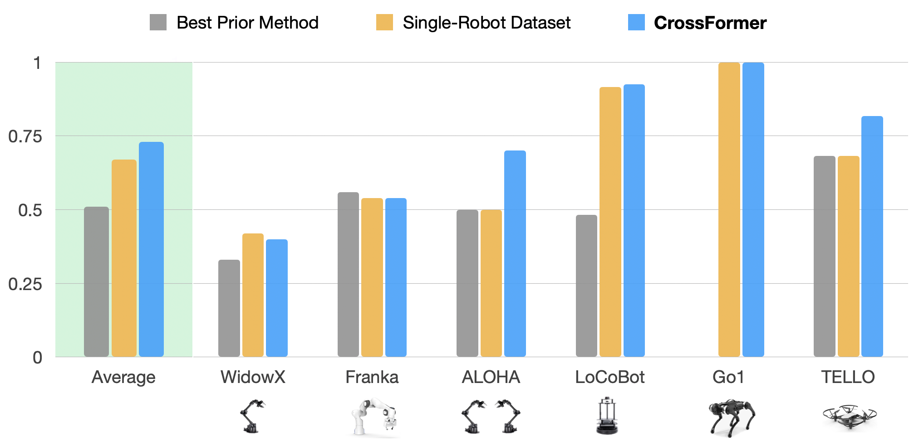
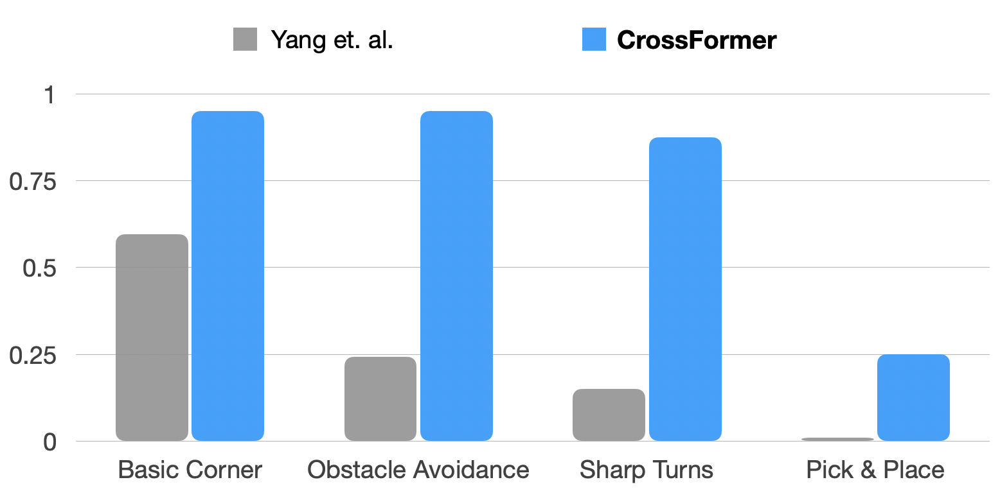

DiT-Block Policy
The Ingredients for Robotic Diffusion Transformers
CrossFormer is the first robot policy to achieve state-of-the-art performance across six embodiments of distinct action spaces without any action space alignment.
Abstract
Modern machine learning systems rely on large datasets to attain broad generalization, and this often poses a challenge in robot learning, where each robotic platform and task might have only a small dataset. By training a single policy across many different kinds of robots, a robot learning method can leverage much broader and more diverse datasets, which in turn can lead to better generalization and robustness. However, training a single policy on multi-robot data is challenging because robots can have widely varying sensors, actuators, and control frequencies.
We propose CrossFormer, a scalable and flexible transformer-based policy that can consume data from any embodiment. We train CrossFormer on the largest and most diverse dataset to date, 900K trajectories across 30 different robot embodiments. We demonstrate that the same network weights can control vastly different robots, including single and dual arm manipulation systems, wheeled robots, quadcopters, and quadrupeds. Unlike prior work, our model does not require manual alignment of the observation or action spaces. Extensive experiments in the real world show that our method matches the performance of specialist policies tailored for each embodiment, while also significantly outperforming the prior state of the art in cross-embodiment learning.
Approach

CrossFormer Architecture.
Our method, CrossFormer, casts the cross-embodied imitation learning problem as a sequence-to-sequence problem. We choose a transformer-based policy to handle the variable length inputs and outputs. Observations, proprioception, and a task specification are tokenized by modality-specific tokenizers. These are assembled into a token sequence, and fed into a decoder-only transformer backbone that is shared across all embodiments. The output embeddings of this transformer are then fed into separate action heads for each class of embodiments to produce actions of the corresponding dimension.
BiPlay Dataset

CrossFormer Architecture.
Our method, CrossFormer, casts the cross-embodied imitation learning problem as a sequence-to-sequence problem. We choose a transformer-based policy to handle the variable length inputs and outputs. Observations, proprioception, and a task specification are tokenized by modality-specific tokenizers. These are assembled into a token sequence, and fed into a decoder-only transformer backbone that is shared across all embodiments. The output embeddings of this transformer are then fed into separate action heads for each class of embodiments to produce actions of the corresponding dimension.
Results

We compare CrossFormer to the same architecture trained on just the target embodiment data (single-robot baseline) as well as the best prior method. Overall, CrossFormer performs better than or comparably to the state of the art.
Below, we provide evaluation videos for each of our four distinct action modes: Single-Arm Manipulation, Bimanual Manipulation, Navigation, and Locomotion. Here, the state-of-the-art method refers to the best prior method or the single-robot baseline, whichever has a higher success rate.
Single-Arm Manipulation
On the Franka, we evaluate on a sweeping task, in which the robot's goal is to grasp the grey brush and sweep the acorns into the dustpan.
On the WidowX, we evaluate on two different pick and place tasks: put the mushroom in the silver pot and place the spoon on the blue towel.
Matches State-of-the-Art Performance? ✅︎
We show that it is possible to co-train a policy on a variety of diverse embodiments, not just limited to single-arm manipulators, while maintaining performance achieved by prior work trained only on single-arm-data.
Bimanual Manipulation
The robot's goal is to uncap the orange Sharpie pen.
Matches State-of-the-Art Performance? ✅︎
CrossFormer is first work to show successful performance of a cross-embodiment policy on a bimanual robot.
The bimanual embodiment is challenging due to various specifications, including longer-horizon action chunking and a higher control frequency (50hz).
Our method's flexibility allows us to meet such robot-specific constraints without adversely impacting performance on other embodiments.
Navigation
Given a topological map of goals, the navigation robot should follow the path to the goal while avoiding any collisions.
Matches State-of-the-Art Performance? ✅︎
Without any action-space alignment, our policy is capable of navigating trajectories both indoors and outdoors, as well as on out-of-distribution paths.
In addition, we show strong performance on more complex navigation tasks, such as obstacle avoidance, sharp turns, and corner-turning (see the section below).
Locomotion
The quadrupedal robot must learn to successfully walk forward.
Matches State-of-the-Art Performance? ✅︎
Our policy is the first to successfully train a cross-embodiment policy that successfully controls manipulators, navigators, and low-level motion of quadrupeds.
The most related cross-embodiment prior work controls quadrupeds using high-level, 2D waypoints.
CrossFormer can not only control such navigators with 2D waypoints, but is also capable of handling the low-level, 12-dimensional actions needed to entirely control a quadrupedal robot.
Comparison to Best Prior Cross-Embodiment Work
In this section, we compare video rollouts of our policy to Yang et. al., who train a single policy across manipulation and navigation by aligning the observation and action spaces. Though this work is the first to demonstrate positive transfer from navigation to manipulation, we find that observation and action-space alignment sometimes hinders performance on complex navigation and third-person single-arm manipulation tasks. Qualitatively, our navigation policies are smoother with less stop & go movement.

CrossFormer forgoes action alignment and achieves an average of 3x higher success rates on complex navigation and manipulation tasks.
Obstacle Avoidance
Turn Corner
Sharp Turns
BibTeX
@article{Doshi24-crossformer,
title={Scaling Cross-Embodied Learning: One Policy for Manipulation, Navigation, Locomotion and Aviation},
author={Ria Doshi and Homer Walke and Oier Mees and Sudeep Dasari and Sergey Levine},
journal={arXiv preprint arXiv:2408.11812},
year={2024}
}